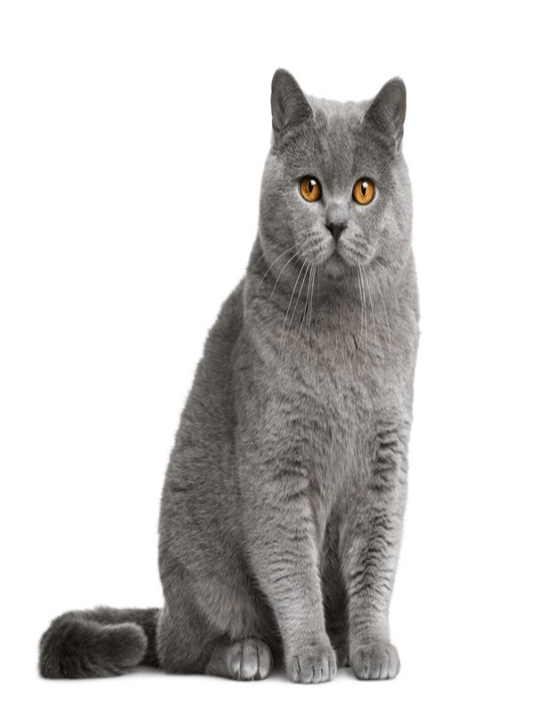

The British Shorthair is the pedigreed version of the traditional British domestic cat, with a distinctively stocky body, thick coat, and broad face. The most familiar colour variant is the "British Blue", with a solid
grey-blue coat, pineapple eyes, and a medium-sized tail.